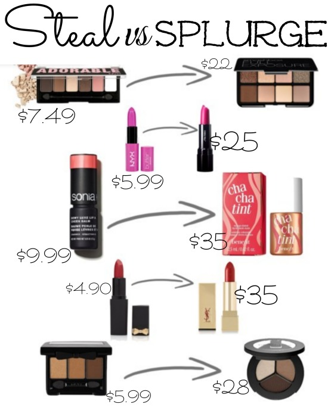
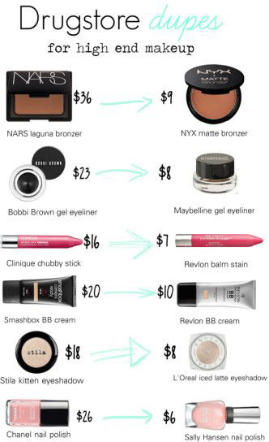

Makeup Dupes


Do You Ever Feel Like Makeup Is Too Expensive? Don't Worry We Got You Covered! Down Below Are Some Dupes. Dupes Are Alternatives.
The Lipstick in the picture Steal Us Splurge has dupes to spend more. Instead of buy the cheap lipstick for $4.90, you can buy a YSL lipstick for $35.
The NYX matte Bronzer is a cheaper alternative to NARS laguna Bronzer. NYX matte Bronzer cost $9.00. NARS laguna Bronzer cost $36.00.
THe Maybelline "Eye Studio" eyeliner is an alternative to the Bobby Brown eyeliner. The Bobby Brown Gel Eyeliner is 23$ and the Maybelline "Eye Studio" Gel Eyeliner is 10$
The Physicians Formula "Shimmer Strip" Highlighter is an alternative to the Bobby Brown "Shimmer Brick" Highlighter. The Physicians Formula is $11.95 and the Bobby Brown Highlighter is $42.00.
The Wet n Wild "Lagoon" Eyeshadow is an alternative to the Urban Decay Eyeshadow. The Wet n Wild Eyeshadow is $1.99 and the Urban Decay Eyeshadow is $18.00.